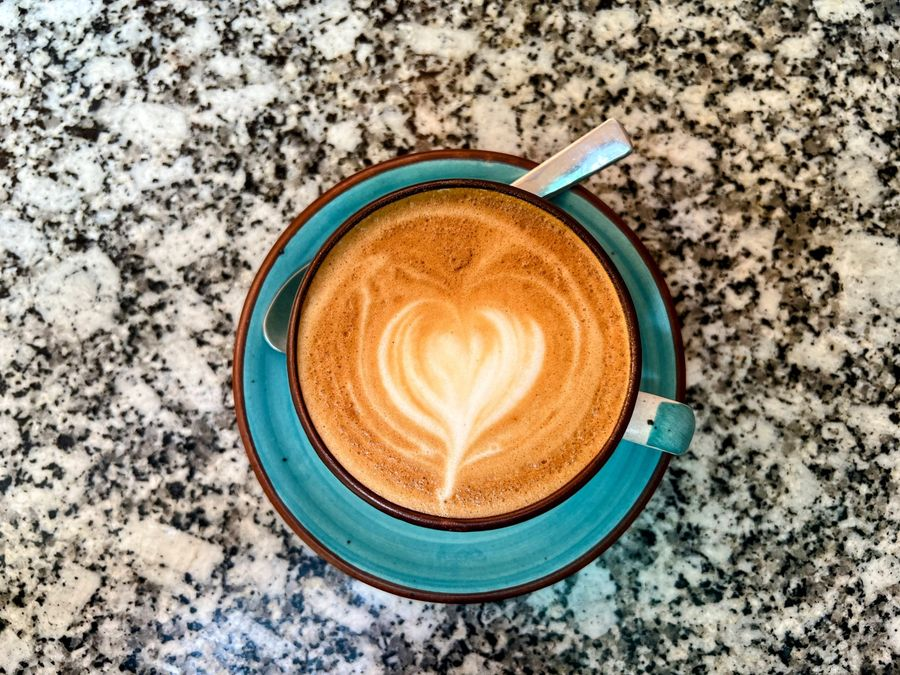

Ana sayfa / Mekân
Beyrut adında, Taksim'de bir mola yeri

Adımızı bir Akdeniz şehrinden, adresimizi İstanbul'un geç saatlere kadar uyumayan semtinden aldık. Bu sayfa ikisinin bize hissettirdiklerini bir panoda topluyor.
Atmosfer panosu
Beyrut'un karo zeminleri ve kemerli pencereleri, Taksim'in geç saatlere uzanan akşamları. Masaya oturduğunuzda aklınızda kalsın istediğimiz duygu bu.
Fotoğraflar temsilidir. Mekânın güncel hâlini Instagram'da @beirutkafetaksim hesabında görebilirsiniz.


Karo, kemer, kahve: üçü de acele sevmez.
4,9/ 5
1.223 Google yorumunun ortalaması
Bizi en iyi, masamızda oturmuş olanlar anlatır. Yorumları buraya taşımıyoruz; hepsini Google'da, yazıldığı gibi okuyabilirsiniz.
Günün dört hâli
Sabah sekizden gece yarısını geçene kadar açığız; aynı masa günün her saatinde başka bir yere dönüşür.
- Sabah08:00–11:00
Sokak yeni uyanır. Güne sakin bir fincanla başlamak isteyenlerin saati.
- Öğle11:00–16:00
Günün ortasında soluklanma arası; bir kahve, yanında hafif bir şey.
- Akşam16:00–21:00
İş çıkışı ve buluşma saatleri. Kalabalık gelecekseniz önceden yazın.
- Gece21:00–00:30
Taksim'in geç saatleri. Kapanışa kadar son bir çay ya da kahve için vakit var.
Buraya ne için gelinir?
Herkesin bahanesi başka. Akla ilk gelenleri sıraladık.
- Baş başa bir kahveİki fincan, bir masa. Günün her saatine uyar.
- Arkadaş buluşmasıTaksim'de buluşma noktası arayanlara: Anadolu Sokak 31/A.
- Doğum günü ve kutlamaKişi sayısını ve saati önceden yazın; masanızı birlikte planlayalım.
- İş görüşmesiKısa bir toplantı ya da tanışma kahvesi için masa ayırtabilirsiniz.
- Kitap, defter, bilgisayarTek başınıza gelecekseniz priz ve Wi-Fi durumunu önceden sorabilirsiniz.
- Gece kahvesiKapımız 00:30'a kadar açık; geç saatte sıcak bir şey içmek isteyenlere.
Gelmeden sorun
Her şeyi bu sayfaya yazmak yerine en doğrusunu yapıyoruz: merak ettiğinizi seçin, yanıtı doğrudan bizden alın.
Mesajınız
Yukarıdan sorularınızı seçin; mesaj kendiliğinden yazılır.
Merhaba Beirut Cafe Taksim, gelmeden önce bilgi almak istiyorum.
Panoya bakmak yetmez; bir de masadan görün
Katip Mustafa Çelebi, Anadolu Sk. 31/A, 34433 Beyoğlu/İstanbul